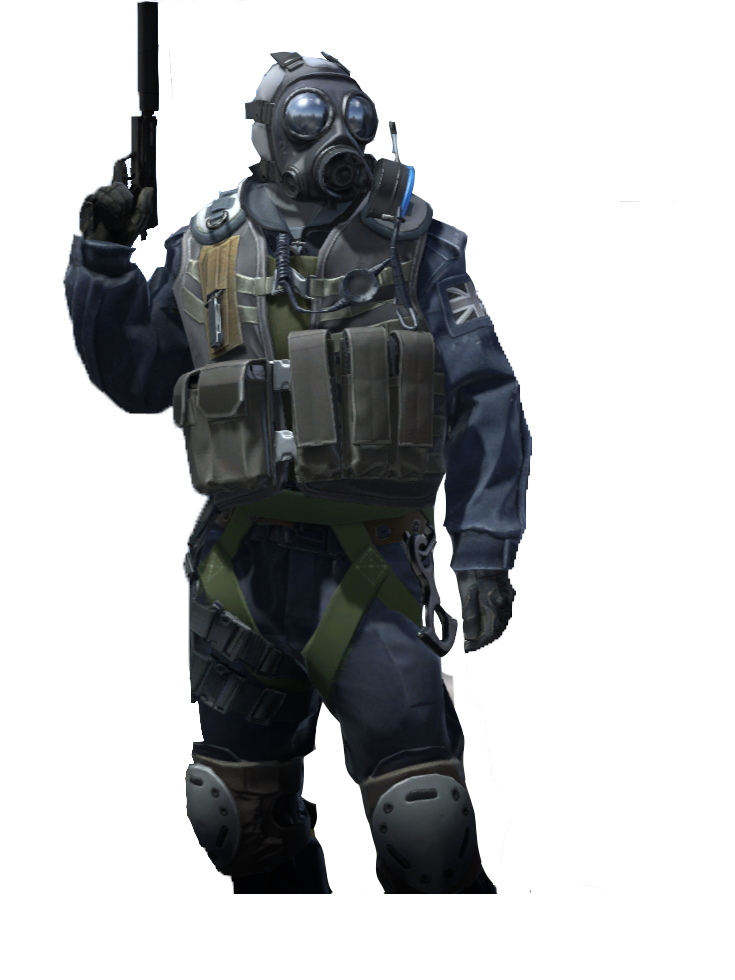
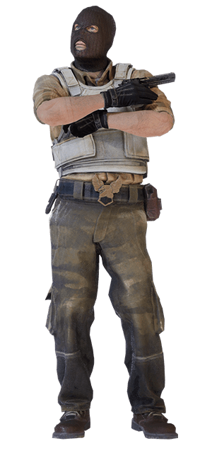

Sobre
Counter-Strike é uma série de jogos eletrônicos multijogador de tiro em primeira pessoa, no qual times de terroristas e contra-terroristas batalham entre si, respectivamente, realizando um ato de terror e prevenindo-os. A série iniciou-se no Windows em 1999 com o lançamento do primeiro jogo, Counter-Strike
Contra-Terroristas
Os contra-terroristas devem impedir que os terroristas plantem a bomba e, caso ela seja plantada, desarmá-la antes que exploda. Usam táticas de infiltração e defesa para neutralizar a ameaça. Também podem vencer eliminando todos os terroristas, garantindo a segurança da área.

Terroristas
Os terroristas têm a missão de plantar a bomba em um dos locais designados (A ou B) e protegê-la até que exploda. Trabalham em equipe para superar a resistência dos contra-terroristas, utilizando táticas de distração e cobertura. Alternativamente, podem vencer eliminando todos os membros da equipe contra-terrorista.
